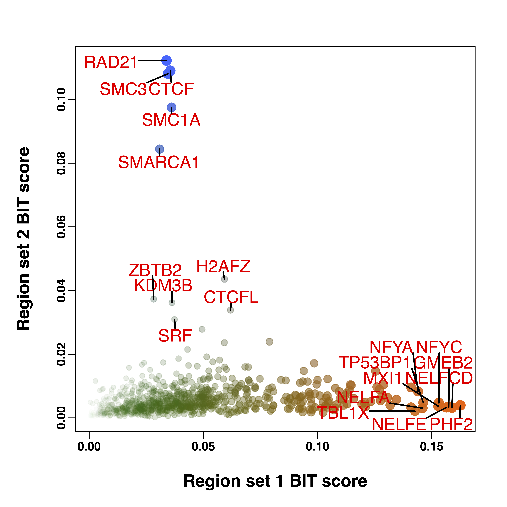

Examples
The following examples show how to generate several more plots.
Plot the BIT scores
To plot BIT score, once we have the output, rank_plot() function can be used to generate a barplot for the top 10 TRs with the 95 CI.
rank_plot("file_path/file_name",output_path="output_path")
NULL
Compare TRs derived from two region sets
Imagine you’re working with two sets of regions obtained from distinct sources, and your objective is to determine which transcriptional regulators exhibit a higher significance within each set. The BIT package offers a specialized function for this purpose, BIT_compare. This function takes two sets of input regions, computes the BIT score for each, and generates a scatter plot to visually represent the differences between them.
The following example includes two sets of input regions that originate from an acute depletion experiment targeting CTCF in a MLL-rearranged human B cell lymphoblastic leukemia (B-ALL) cell line. To compare these sets and uncover the significant TRs within each, you would use the BIT_compare function. Let’s assume your input files are located at file_path/file1_name and file_path/file2_name, and you intend to store the output in output_path. Here’s how you proceed:
> BIT_compare("file_path/file1_name","file_path/file2_name",output_path=output_path)
[1] "Load and map peaks to bins..."
[1] "Done."
[1] "Compare the input regions with the pre-compiled reference ChIP-seq data, bin width used: 1000 bps"
====================================================================================================
[1] "Done."
[1] "Start BIT Gibbs sampler for file 1, iterations: 5000"
0% 10 20 30 40 50 60 70 80 90 100%
[----|----|----|----|----|----|----|----|----|----|
**************************************************|
[1] "Done."
[1] "file1 saved as output_path/file1_name.rds"
[1] "Start BIT Gibbs sampler for file 2, iterations: 5000"
0% 10 20 30 40 50 60 70 80 90 100%
[----|----|----|----|----|----|----|----|----|----|
**************************************************|
[1] "Done."
[1] "file2 saved as output_path/file2_name.rds"
The same parameters used in BIT can also be changed here. We can check the generated rank table:
> file1_table<-display_tables("/Users/zeyulu/Dropbox/datasets/DiffBind_new/CTCF_up.rds","/Users/zeyulu/Dropbox/datasets/DiffBind_new/")
> file1_table
TR Theta_i lower upper BIT_score BIT_score_lower BIT_score_upper Rank
1 PHF2 -1.639907 -2.054012 -1.403301 0.16247765 0.11364764 0.19729287 1
2 NELFCD -1.667038 -1.772569 -1.570301 0.15881952 0.14522317 0.17217349 2
3 GMEB2 -1.677724 -2.177140 -1.421863 0.15739711 0.10182216 0.19436974 3
4 NELFE -1.685149 -1.696899 -1.673411 0.15641490 0.15487072 0.15796993 4
5 NFYC -1.710305 -2.128452 -1.473101 0.15312420 0.10636206 0.18647172 5
6 MXI1 -1.712181 -1.892991 -1.577314 0.15288103 0.13090382 0.17117628 6
7 TP53BP1 -1.764038 -1.842045 -1.699313 0.14628531 0.13680959 0.15455504 7
8 NELFA -1.766545 -1.831723 -1.708190 0.14597249 0.13803317 0.15339865 8
9 NFYA -1.782675 -1.825434 -1.738634 0.14397317 0.13878308 0.14948653 9
10 TBL1X -1.793725 -1.897890 -1.695351 0.14261669 0.13034745 0.15507339 10
......
> file2_table<-display_tables("/Users/zeyulu/Dropbox/datasets/DiffBind_new/CTCF_down.rds","/Users/zeyulu/Dropbox/datasets/DiffBind_new/")
> file2_table
TR Theta_i lower upper BIT_score BIT_score_lower BIT_score_upper Rank
1 RAD21 -2.068449 -2.071377 -2.065660 0.112201479 0.111910061 0.112479571 1
2 CTCF -2.100346 -2.101384 -2.099273 0.109063166 0.108962422 0.109167457 2
3 SMC3 -2.110619 -2.120554 -2.101877 0.108068962 0.107115052 0.108914473 3
4 SMC1A -2.225243 -2.236839 -2.214513 0.097506464 0.096490742 0.098454801 4
5 SMARCA1 -2.383749 -2.913175 -2.168685 0.084420369 0.051506129 0.102598051 5
6 H2AFZ -3.088567 -3.754663 -2.848781 0.043581322 0.022872913 0.054744379 6
7 ZBTB2 -3.250662 -3.411804 -3.106963 0.037303111 0.031928588 0.042820946 7
8 KDM3B -3.282236 -3.824898 -3.051519 0.036185664 0.021354682 0.045151926 8
9 CTCFL -3.350775 -3.378092 -3.324845 0.033869786 0.032987201 0.034728615 9
10 SRF -3.444633 -3.498132 -3.394713 0.030929325 0.029365417 0.032461110 10
It is clearly noted the perturbed TR and other cohesion complex components are more significant in the input region set 2. We can further draw a scatterplot to show the whole-picture.
> compare_scatter_plot("file_path/file1_name.rds","file_path/file2_name.rds",output_path)
pdf
2
The output picture will be saved as “file1_name_file2_name_compare.pdf”
